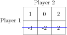
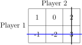

Section 2.2 Dominated Strategies
Recall that in a zero-sum game, we know that one player's win is the other player's loss. Furthermore, we know we can rewrite any zero-sum game so that the player's payoffs are in the form \((a, -a)\text{.}\) Note, this works even if \(a\) is negative; in which case, \(-a\) is positive.
Consider the zero-sum game with payoff matrix in Table 2.2.2. Note that for simplicity our payoff matrix contains only the payoffs and not the strategy names; but Player 1 still chooses a row and Player 2 still chooses a column.
| Player 2 | ||
| Player 1 | \((1, -1)\) | \((-0, 0)\) |
| \((-1, 1)\) | \((-2, 2)\) | |
If we know we are playing a zero-sum game, then the use of ordered pairs seems somewhat redundant: If Player 1 wins 1, then we know that Player 2 must lose 1 (win \(-1\)). Thus, if we KNOW we are playing a zero-sum game, we can simplify our notation by just using Player 1's payoffs. The above matrix in Table 2.2.2 can be simplified as in Table 2.2.3.
| Player 2 | ||
| Player 1 | 1 | 0 |
| -1 | -2 | |
When simplifying, keep a few things in mind:
- You MUST know that the game is zero-sum.
- If it is not otherwise specified, the payoffs represent Player 1's payoffs.
- You can always give a similar matrix representing Player 2's payoffs. However, due to (2), you should indicate that the matrix is for Player 2. For example, Player 2's payoff matrix would be given by Table 2.2.4.
Table 2.2.4. Player 2 Player 1 -1 0 1 2 - Both players can make strategy decisions by considering only Player 1's payoff matrix. (Why?) Just to test this out, by looking only at the matrix in Table 2.2.3 determine which strategy each player should choose.
Table 2.2.5. Player 2 Player 1 1 0 -1 -2
In this last example, it should be clear that Player 1 is looking for rows which give her the largest payoff. This is nothing new. However, Player 2 is now looking for columns which give Player 1 the SMALLEST payoff. (Why?)
Now that we have simplified our notation for zero-sum games, let's try to find a way to determine the best strategy for each player.
Example 2.2.6. A \(2\times 3\) Game.
Consider the zero-sum game given in Table 2.2.7.
| Player 2 | |||
| Player 1 | 1 | 0 | 2 |
| -1 | -2 | 2 | |
Determine which row Player 1 should choose. Is there any situation in which Player 1 would choose the other row?
Example 2.2.8. Another \(2 \times 3\) Game.
Consider the zero-sum game given in Table 2.2.9.
| Player 2 | |||
| Player 1 | 1 | 0 | 2 |
| -1 | -2 | 3 | |
Determine which row Player 1 should choose. Is there any situation in which Player 1 would choose the other row?
In Example 2.2.6, no matter what Player 2 does, Player 1 would always choose Row 1, since every payoff in Row 1 is greater than or equal to the corresponding payoff in Row 2 (\(1\ge -1\text{,}\) \(0\ge -2\text{,}\) \(2\ge 2\)). In Example 2.2.8, this is not the case: if Player 2 were to choose Column 3, then Player 1 would prefer Row 2. In Example 2.2.6 we would say that Row 1 dominates Row 2.
Definition 2.2.10.
A strategy \(X\) dominates a strategy \(Y\) if every entry for \(X\) is greater than or equal to the corresponding entry for \(Y\text{.}\) In this case, we say \(Y\) is dominated by \(X\text{.}\)
If strategy \(X\) dominates stratgy \(Y\text{,}\) we can write \(X\succ Y\text{.}\)
In mathematical notation, let \(a_{ik}\) be the value in the \(i^{ th}\) row and \(k^{ th}\) column. Similarly, \(a_{jk}\) is the value in the \(j^{ th}\) row and \(k^{ th}\) column. The \(i^{ th}\) row dominates the \(j^{ th}\) row if \(a_{ik}\ge a_{jk}\) for all \(k\text{,}\) and \(a_{ik}> a_{jk}\) for at least one \(k\text{.}\)
This definition can also be used for Player 2: we consider columns instead of rows. If we are looking at Player 1's payoffs, then Player 2 prefers smaller payoffs. Thus one column \(X\) dominates another column \(Y\) if all the entries in \(X\) are smaller than or equal to the corresponding entries in \(Y\text{.}\)
Here is the great thing: we can always eliminate dominated strategies! (Why?) Thus, in Example 2.2.6, we can eliminate Row 2, as in Figure 2.2.11.

Now it is easy to see what Player 2 should do.
In Example 2.2.8, we cannot eliminate Row 2 since it is not dominated by Row 1. However, it should be clear that Column 2 dominates Column 3 (remember, Player 2 prefers SMALLER values). Thus we can eliminate Column 3 as in Figure 2.2.12.
AFTER eliminating Column 3, Row 1 dominates Row 2. Now, in Figure 2.2.13 we can eliminate Row 2.

Again, now it is easy to determine what each player should do.
Exercise 2.2.14. Check equilibrium pairs.
Check that the strategy pairs we determined in Example 2.2.6 and Example 2.2.8 are, in fact, equilibrium pairs.
Now, look back at the election examples from Subsection 2.1.1 and apply the process of eliminating dominated strategies.
Exercise 2.2.15. Eliminating dominated strategies.
Use the idea of eliminating dominated strategies to determine what each player should do in the Arnold/ Bainbridge examples in Table 2.1.10, Table 2.1.13, and Table 2.1.16. Do you get the same strategy pairs as you determined in the related exercises (Exercise 2.1.11, Exercise 2.1.14, Exercise 2.1.17)?
The next three exercises provide more practice in using dominated strategies to find equilibrium pairs.
Exercise 2.2.16. More practice with dominated strategies.
Use the idea of eliminating dominated strategies to determine any equilibrium pairs in the zero-sum game given in Table 2.2.17. Note, since it is a zero-sum game we need only show Player 1's payoffs. Explain all the steps in your solution. If you are unable to find an equilibrium pair, explain what goes wrong.
| Player 2 | |||||
| W | X | Y | Z | ||
| A | 1 | 0 | 0 | 10 | |
| Player 1 | B | -1 | 0 | -2 | 9 |
| C | 1 | 1 | 1 | 8 | |
| D | -2 | 0 | 0 | 7 | |
Exercise 2.2.18. Determine equilibrium pairs.
Determine any equilibrium pairs in the zero-sum game given in Table 2.2.19. Explain all the steps in your solution. If you are unable to find an equilibrium pair, explain what goes wrong.
| Player 2 | |||||
| W | X | Y | Z | ||
| A | 1 | 2 | 3 | 4 | |
| Player 1 | B | 0 | -1 | -0 | 5 |
| C | -1 | 3 | 2 | 4 | |
| D | 0 | 1 | -1 | 1 | |
Exercise 2.2.20. Practice finding equilibrium pairs.
Determine any equilibrium pairs in the zero-sum game given in Table 2.2.21. Explain all the steps in your solution. If you are unable to find an equilibrium pair, explain what goes wrong.
| Player 2 | |||||
| W | X | Y | Z | ||
| A | -2 | 0 | 3 | 20 | |
| Player 1 | B | 1 | -2 | -3 | 0 |
| C | 10 | -10 | -1 | 1 | |
| D | 0 | 0 | 10 | 15 | |
Exercise 2.2.22. A more challenging example.
Determine any equilibrium pairs in the zero-sum game given in Table 2.2.23. Explain all the steps in your solution. If you are unable to find an equilibrium pair, explain what goes wrong.
| Player 2 | |||||
| W | X | Y | Z | ||
| A | -2 | 0 | 3 | 20 | |
| Player 1 | B | 1 | -2 | -5 | -3 |
| C | 10 | -10 | -1 | 1 | |
| D | 0 | 0 | 10 | 8 | |
Chances are you had trouble determining an equilibrium pair for the game in Exercise 2.2.22. Does this mean there isn't an equilibrium pair? Not necessarily, but we are stuck if we try to use only the idea of eliminating dominated strategies. So we need a new method.
We might think of our next method as the “worst case scenario,” or “extremely defensive play.” The idea is that we want to assume our opponent is the best player to ever live. In fact, we might assume our opponent is telepathic. So no matter what we do, our opponent will always guess what we are going to choose.
Example 2.2.24. Playing Against the Best.
Assume you are Player 1, and you are playing against this “infinitely smart” Player 2. Consider the game in Table 2.2.17. If you pick row A, what will Player 2 do? Player 2 will pick column X or Y. Try this for each of the rows. Which row is your best choice? If you pick A, you will get \(0\text{;}\) if you pick B, you will get \(-2\text{;}\) if you pick C, you will get \(1\text{;}\) and if you pick D you will get \(-2\text{.}\) Thus, your best choice is to choose C and get \(1\text{.}\) Now assume you are Player 2, and Player 1 is “infinitely smart.” Which column is your best choice? If you pick W, Player 1 will get \(1\) (you will get \(-1\)); if you pick X, Player 1 will get \(1\text{;}\) if you pick Y, Player 1 will get \(1\text{;}\) and if you pick Z, you will get \(10\text{.}\) Thus, you can choose W, X, or Y (since you want Player 1 to win the least) and get \(-1\text{.}\)
Exercise 2.2.25. A new method.
Using the method described in Example 2.2.24, determine what each player should do in the game in Table 2.2.19.
Exercise 2.2.26. More practice with the new method.
Using the method described in Example 2.2.24, determine what each player should do in the game in Table 2.2.21.
After working through a few examples can you describe more generally the process used in Example 2.2.24? What is Player 1 looking for in each row? Then how does she choose which row to play? What is Player 2 looking for in each column? How does he choose which column to play?
Exercise 2.2.27. Generalizing the new method.
Generalize the method described in Example 2.2.24. In other words, give a general rule for how Player 1 should determine his or her best move. Do the same for Player 2.
Exercise 2.2.28. The new method and equlibrium points.
What do you notice about using this method on the games in Tables 2.2.17, Table 2.2.19, and Table 2.2.21? Is the solution an equilibrium pair?
Exercise 2.2.29. The new method on the challenging example.
Now try this method on the elusive payoff matrix in Table 2.2.23. What should each player do? Do you think we get an equilibrium pair? Explain.
The strategies we found using the above method have a more official name. Player 1's strategy is called the maximin strategy. Player 1 is maximizing the minimum values from each row. Player 2's strategy is called the minimax strategy. Player 2 is minimizing the maximum values from each column. Notice, we can find the maximin and minimax strategies for any zero-sum game. But do our players always want to use these strategies? Will they always result in an equilibrium pair? The next five exercises explore these questions.
Exercise 2.2.30. Look for dominated strategies.
Let's consider another game matrix, given in Table 2.2.31. Explain why you cannot use dominated strategies to find an equilibrium pair. Do you think there is an equilibrium pair for this game (why or why not)?
| Player 2 | |||||
| W | X | Y | Z | ||
| A | -2 | 0 | 3 | 20 | |
| Player 1 | B | 1 | 2 | -3 | 0 |
| C | 10 | -10 | -1 | 1 | |
| D | 0 | 0 | 10 | 15 | |
Exercise 2.2.32. Find the maximin/minimax strategy.
If both players use the maximin/ minimax strategy, what is the outcome of the game in Table 2.2.31?
Exercise 2.2.33. Predicting a maximin strategy.
In the game in Table 2.2.31, if Player 1's opponent can guess that Player 1 will choose to use a maximin strategy, is Player 1 better off not using the maximin strategy?
Exercise 2.2.34. Deviating from the maxinmin/minimax strategy.
Suppose both players initially decide to use the minimax/ maximin strategy in the game in Table 2.2.31. Is Player 1 better off choosing a different strategy? If Player 2 guesses a change, is Player 2 better off changing strategies? Continue this line of reasoning for several iterations. What strategies do each of the players choose? Is at least one player always better off switching strategies? Can we conclude that the maximin/ minimax strategy does not lead to an equilibrium pair?
Exercise 2.2.35. Comparing examples.
Compare your answers in Exercise 2.2.34 to what happens in Exercise 2.2.16, Exercise 2.2.18, and Exercise 2.2.20. Can you identify any key differences between the games in Exercise 2.2.34 and Exercise 2.2.16, Exercise 2.2.18, and Exercise 2.2.20?
Given a zero-sum matrix game, we can find equilibruim pairs (if they exist) by the “guess and check” method, by eliminating dominated strategies, and by looking for the minimax/maximin strategies. You should be able to apply all three methods and think about which method might be the most appropriate for a given matrix game. For example, although “guess and check” should always find an equilibrium point if it exists, it may be very tedious to apply to a really large matrix. The maximin/minimax method might be much faster.